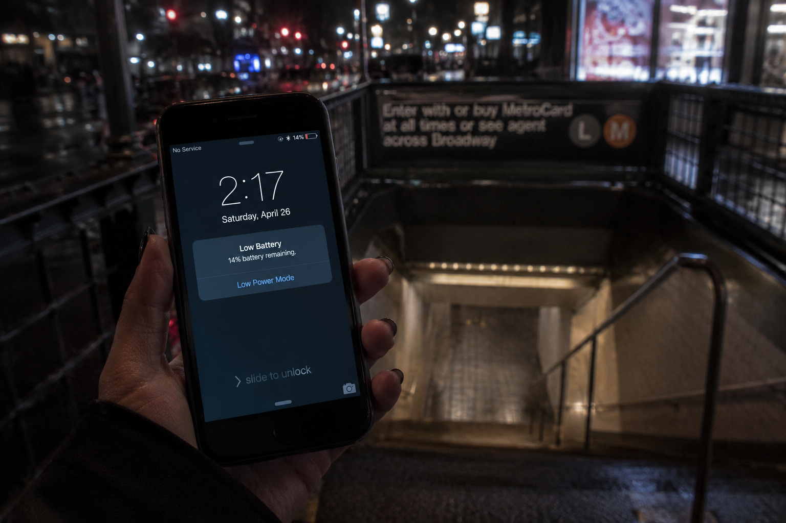

You stop before the station stairs and check your phone like it might give you a better answer than your brain.
14%.
Not dead. Not safe either.
Your brightness is too high. Three apps are still open. The group chat is somehow alive with people who are already home, already eating, or already lying about being “five minutes away.”
You hover over your friend's name.
Calling feels dramatic. Texting feels too small. Doing nothing feels easier, which is exactly what makes it dangerous.
The station entrance hums below you. The street stretches behind you. Your phone warms in your hand like a timer.